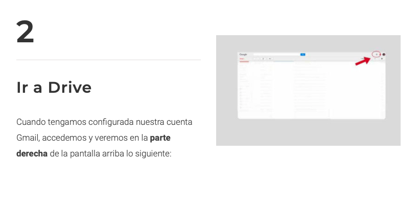
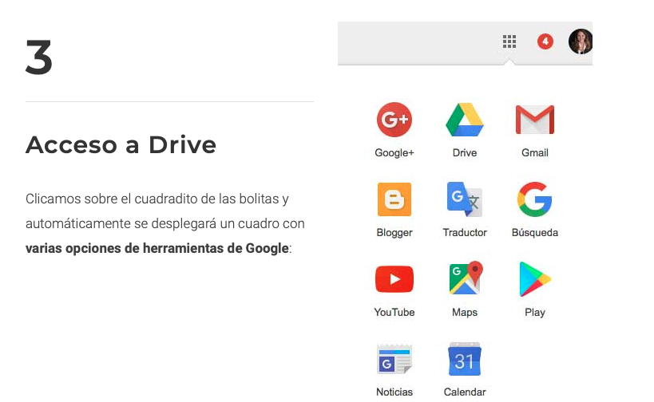
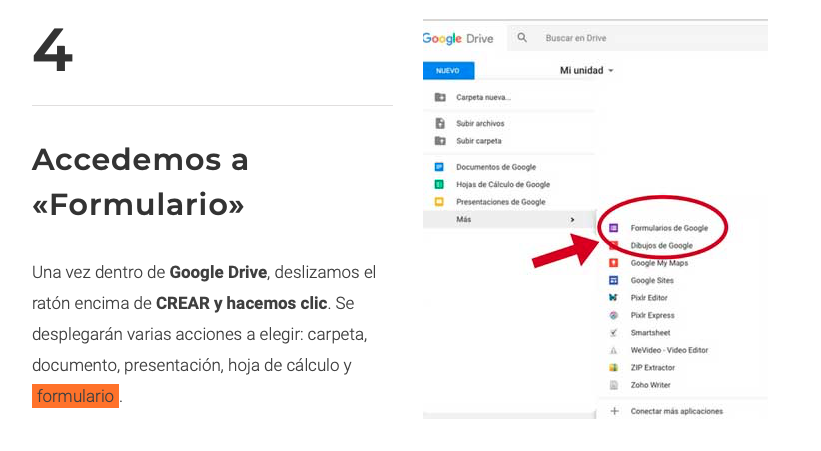
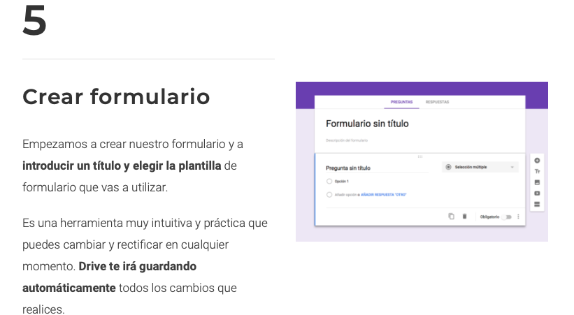
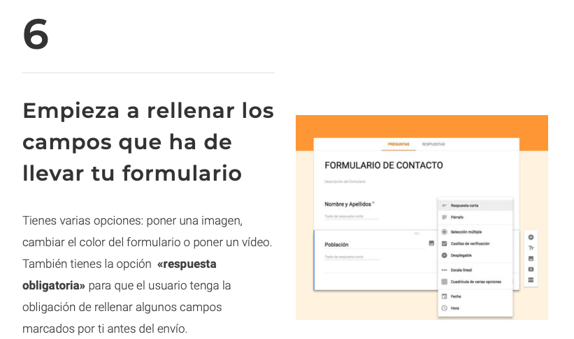

Crear formularios en Gmail
Google Forms es una aplicación de administración de encuestas que se incluye en la suite de oficina de Google Drive junto con Google Docs, Google Sheets y Google Slides. Forms presenta todas las funciones de colaboración y uso compartido que se encuentran en Documentos, Hojas de cálculo y Presentaciones.




